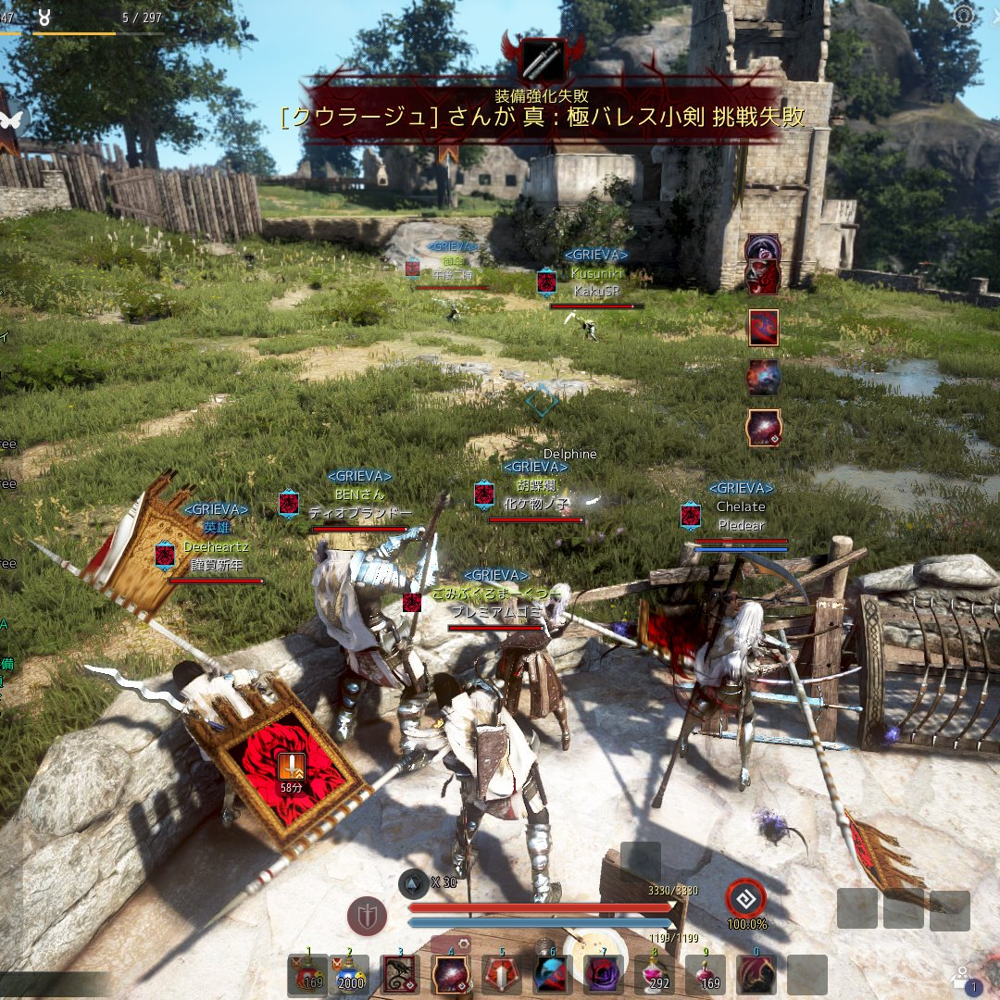
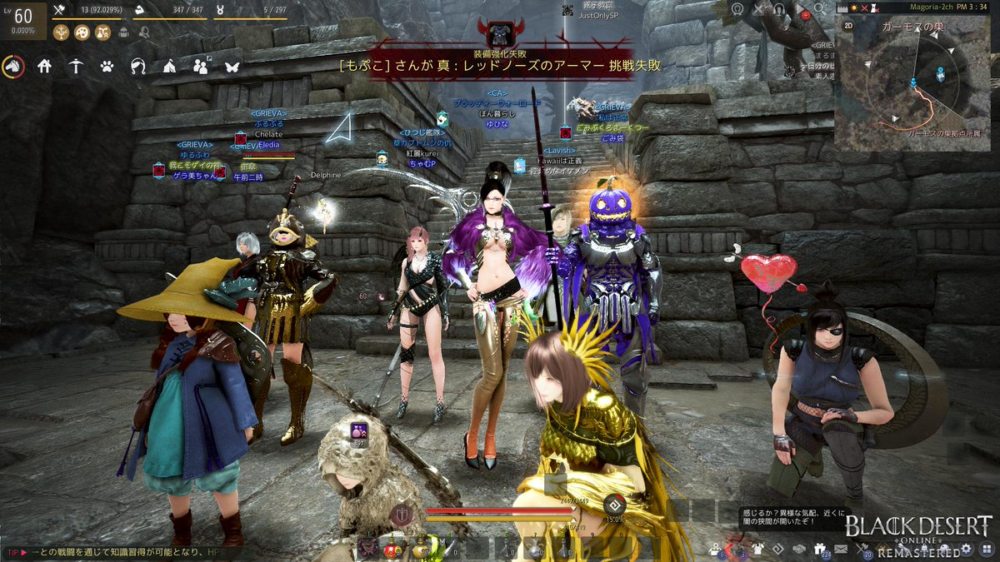
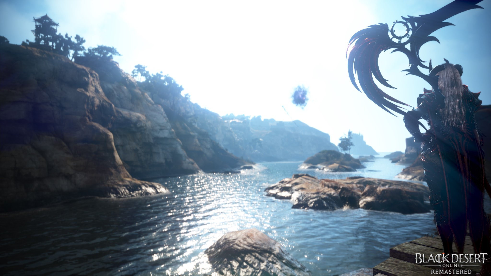

ここを満たしていないと意味がないんじゃないかな？強いとか弱いじゃない ギルドDCに英雄募集がくるため戦争をしたいときだけするというスタンスでもいけるのでは？

これはでかいんじゃないかな。どうしてもこのゲームはギルド内だけで交友が完結しがちだけど。GRIEVAなら必要ならいろんなギルドの人と交流ができます。 若干偏っている気もするけど。

一番重要。赤戦に入るとまずミニマップで青点を確認しよう。敵側にえろでぃあがいたら全力で闇100をぶつけに行こう！